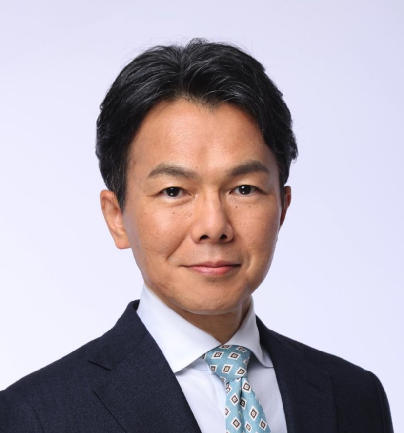
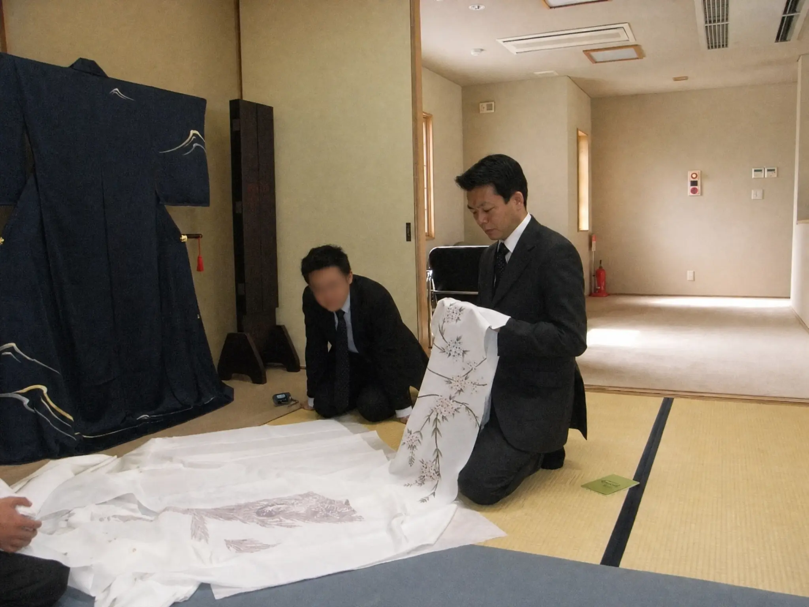
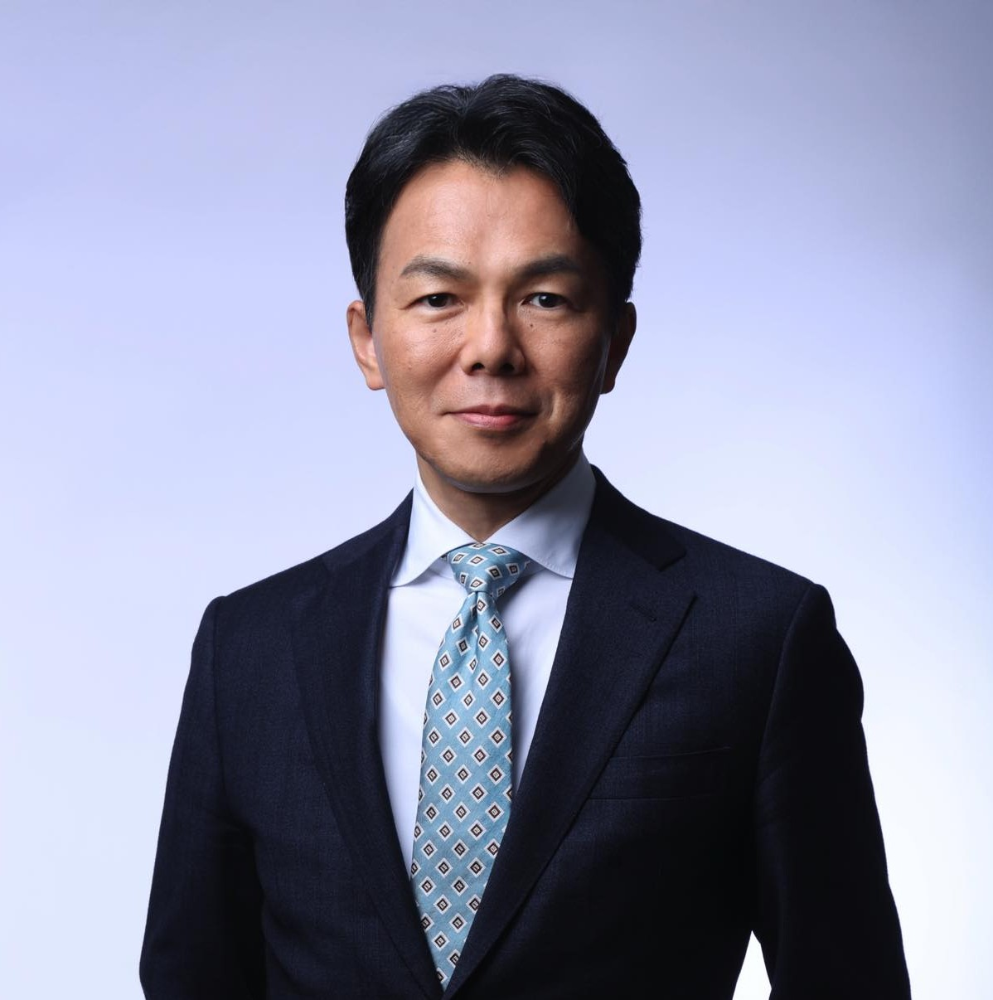

STEP 1｜まず、採用の前提を社内で揃える
先ほどの「先代・古参幹部・社長で言うことが違う」状態のまま募集をかけると、応募が来ても判断が割れます。
これからどんな会社にしたいのか。なぜ今、人を採るのか。入社する人に、何を担ってほしいのか。まず、ここを社内で揃えます。
ここが揃わないまま人物像だけを話し合っても、それぞれが別の人物像を思い描いたままになります。
2代目・3代目経営者の方へ
任せられる人がいない。
いても、その人はもう手一杯。
現場に出ていなくても、同じです。
人に関する判断が、
すべて自分のところに上がってくる。
その状態から抜け出した会社があります。
応募が2〜3倍以上に増えた会社。
採用した人が2年以上定着している会社。
そして、社長自身が現場から離れられた会社もあります。
御社の採用は、どこから直すべきか。

廣瀬祥久
和奏人事パートナーズ代表
同族会社の内側で14年
採用・人事コンサルタント
参加費無料／各回5社までの少人数制／所要90分（＋個別相談30分・ご希望の方のみ）
先日お渡ししたご案内の、
セミナーお申し込みページです。
廣瀬 祥久
和奏人事パートナーズ 代表
同族会社の内側で14年。採用・人事コンサルタント
会社が無名だから。業界に人気がないから。——もちろん、それも影響します。しかし、それだけではありません。
応募が集まらない会社に共通しているのは、採用を「求人を出すこと」から始めてしまっていることです。
採用には、順番があります。家づくりと同じで、土台から積み上げなければ、上に何を載せても崩れます。
ところが多くの会社は、一番上の「募集をかける」だけを、繰り返しています。
だから、こうなります。
最初に戻る
↑お気づきでしょうか。
社長が現場から抜けられないのは、原因ではなく「結果」です。
求人媒体を変えても、紹介会社を使っても、このループの根本的な解決にはなりません。一番上ではなく、土台から手をつける必要があるからです。
採用の話になると、社内でこんなことが起きていないでしょうか。
先代
「うちが大事にしてきたことを、分かってくれる人がいい」
古参幹部
「そんな人は、うちには合わないよ」
現社長（あなた）
「これからの会社には、違う人材が必要だ」
厄介なのは、三人とも会社のことを思って言っていることです。
そして三人とも、「欲しい人が決まっていない」わけではありません。ただ、それぞれが頭の中で思い浮かべている人物が、違うのです。
だから、決着がつきません。誰かが折れたように見えても、腹落ちしているとは限りません。結論だけが決まり、認識が揃わないまま募集が始まります。
その結果、何が起きるか。
つまりこれは、採用の問題に見えて、「どんな人を採るのかを、社内で同じ人物像を共有できるところまで具体化できていない」という経営の問題です。
こうしたズレは、一般の企業でも起こります。ただ、同族会社では少し事情が違います。採用基準の後ろに、先代との関係、家族の歴史、長年会社を支えてきた幹部の思いまで乗っているからです。
だから、単に「どんな人を採りますか」と話し合うだけでは、整理できないことがあります。
同族会社の採用に、順番が必要な理由はここにあります。
応募を増やす方法は、たしかにあります。私たちもお伝えします。
入れても、貯まらない。
しかし、バケツに穴が空いたまま水を注いでも、水は貯まりません。
採用した人が半年で辞める会社は、また採用費をかけて、また同じ求人を出すことになります。人が入れ替わるたびに、教える時間も、現場の負担も、増えていきます。
だから私たちは、応募を増やす前に、「採っても辞める原因」が社内にないかを確認します。
社内で人物像が共有されていれば、採用時に伝えることと、入社後に求めることも揃えやすくなります。そのズレを減らすことが、早期離職を防ぐ最初の一歩になります。
そう感じるのは当然です。実際、それらは採用に影響します。ただ、それだけで結果が決まるわけではありません。
同じ条件のまま、採用が変わった会社があります。
買い手市場と言われた時代でさえ応募が来なかった会社を、応募が来る状態へ変えてきました。
ただし、求人票の書き方を変えたわけではありません。媒体を変えたわけでも、給与を上げたわけでもありません。
変えたのは、順番です。
多くの会社は、いきなり「募集をかける」ところから始めます。しかし、そこから始めると、先ほどのループに戻ります。
では、何から始めるのか。次にご説明する3つのステップが、その答えです。
求人票の書き方、媒体の選び方、面接の手法——これまで提案を受けてきたものは、そのほとんどが「3番目」の話ではなかったでしょうか。
私たちがお伝えするのは、その手前にある2つです。
STEP 1
整える
まず、採用の前提を社内で揃える
先代・幹部・社長の認識を一つにする
STEP 2
決める
次に、採用ペルソナを決める
その役割を担えるのは、どんな人か
STEP 3
伝える
最後に、響く言葉で届ける
働きたい人の心を動かす原稿に
先ほどの「先代・古参幹部・社長で言うことが違う」状態のまま募集をかけると、応募が来ても判断が割れます。
これからどんな会社にしたいのか。なぜ今、人を採るのか。入社する人に、何を担ってほしいのか。まず、ここを社内で揃えます。
ここが揃わないまま人物像だけを話し合っても、それぞれが別の人物像を思い描いたままになります。
その役割を担えるのは、どんな人か
STEP 1で揃えた役割を担えるのは、どんな人なのか。ここで初めて、一人の人物として描けるところまで具体化します。
「優秀な人」「営業ができる人」では、まだ十分ではありません。
たとえば同じ「営業ができる人」でも——
まったく違う人物です。そして、書くべき求人原稿も変わります。
「どんな人に来てほしいのか」を、一人の具体的な人物像として描き、社内で共有する。それが、採用ペルソナです。
働きたい人の心を動かす原稿に
ここで初めて、求人原稿の話になります。1と2が済んでいれば、書くべきことは自然と決まります。
私たちはこの順番を、社内を「整える」・採る人を「決める」・言葉で「伝える」と呼んでいます。
STEP 1を飛ばしたままSTEP 3だけ改善しても、採用後にまたズレが表面化します。
この順番で進めると、「誰を採るか」だけでなく、「入社後に何を期待するのか」まで社内で揃います。それが、採用した人が定着し、やがて任せられる人へ育っていくための、最初の土台になります。
では、「届く求人」とは何か。
応募結果を大きく左右するのが、次の3つです。
情報が足りないほど、「分からない」が不安になり、応募を見送られやすくなります。
条件の羅列だけでは、心は動きません。必要なのは「ここで働く自分」が想像できる情報です。
誰に向けて書くかで、言葉も、出す場所も変わります。だから、ペルソナが先なのです。
御社の求人は、この3つのうち、どれが欠けているでしょうか。
セミナーでは、これを貴社の求人に当てはめながら確認していきます。
1ヶ月間で
19名応募／6名採用
着物専門店
1年間で約1,000万円かけても応募ゼロ。
採用から2年以上、うち5名が現在も在籍。
2ヶ月間で
103名応募／9名採用
都内・不動産会社
大手媒体に3ヶ月90万円で応募30名。
採用から2年以上、うち7名が現在も在籍。
2ヶ月間で
22名応募／3名採用
地方・食品加工会社
あらゆる媒体で2年間に応募4名。
採用から2年以上、3名とも現在も在籍。
※2026年8月時点
私たちは、応募数だけを成果とは考えていません。
採った人が会社に合い、入社し、戦力として残っていく。そこまで含めて「採用」だと考えています。
採用と定着の仕組みを整えた結果、社長ご自身の働き方まで変わった会社があります。
採用がうまくいくと、応募数が増えるだけではありません。
任せられる人が入り、育つことで、社長が本来の仕事に戻れる可能性が生まれます。
これが、私たちが「採用の順番」にこだわる理由です。

私がいたのは、着物業界です。
そもそも「転職先の選択肢」に、入れてもらえないのです。
給与を比べてもらう以前の問題です。求人を見てもらえない。見ても、「自分が着物店で働く姿」が想像できない。
買い手市場と言われた時代でさえ、応募が来ませんでした。
選択肢にすら上がらない会社に、どうすれば人が来るのか。それを14年間、考え続けてきました。
そしてもう一つ。私がいたのは、叔父が経営する同族会社でした。
先代と現場、家族と社員の間で何が起きるのかを、内側から見てきました。
同族会社の採用に順番が必要だと申し上げるのは、そこに理由があります。
現在も、求人倍率23.1倍の歯科衛生士など、採用難職種の支援を行っています。
※全国歯科衛生士教育協議会／令和8年6月公表。養成校の就職者に対する求人人数倍率。
「聞いて終わり」にはしません。
セミナー後、ご参加の方には次の2つをお渡しします。
自社の採用状況を9つの質問で診断できるシートです。セミナーの内容を、その日のうちに自社に当てはめられます。
いま出されている求人原稿を拝見し、改善点をお伝えします。後日メールでお返しします。
「無料セミナー」と聞くと、売り込みを警戒される方が多いと思います。当然のことです。ですので、当日の時間の使い方を、申し込む前にすべて公開します。
セミナー本編
採用3ステップの具体的な内容
支援事例・支援方法・費用のご案内
ご支援の内容と費用感をお伝えします
個別相談（ご希望の方のみ）
貴社の状況を伺い、その場でお答えします
所要90分です。個別相談は任意ですので、90分の時点でご退席いただけます。
その場でお引き止めすることも、後日しつこくご連絡することもありません。
※求人原稿の無料診断をご希望の方は、当日お申し出ください（後日メールでお返しします）。
参加費：無料
各回5社までの少人数制
一社一社と丁寧に向き合うため、人数を絞って開催しています。
なぜ無料なのか
このセミナーは、私たちの考え方が貴社に合うかを知っていただく場でもあります。そして私たちにとっても、貴社の人の問題に本当にお役に立てるかを確認する、最初の機会です。
そのため、参加費はいただいていません。

「震災で融資が途絶え、150名の仲間の職を守りきれなかった。」
あの経験が、「人が残れる会社」を考え続ける原点になりました。
同族会社の内側で14年。
採用・人事コンサルタント
叔父が経営する30数店舗の着物専門店で常務取締役として経営再建に奔走。2012年に独立し、採用支援を重ねる中で、2017年「求人とは“働きたい人の集客”である」という発想に到達。「小手先の採用テクニックは必ず失敗する。採用求人は“事業成長からの逆算”で設計すべき」との信念の元、2代目・3代目が経営する求人難の企業に伴走しています。
独立から14年／これまでに支援した同族企業 34社／1社あたりの平均支援期間 3年3ヶ月